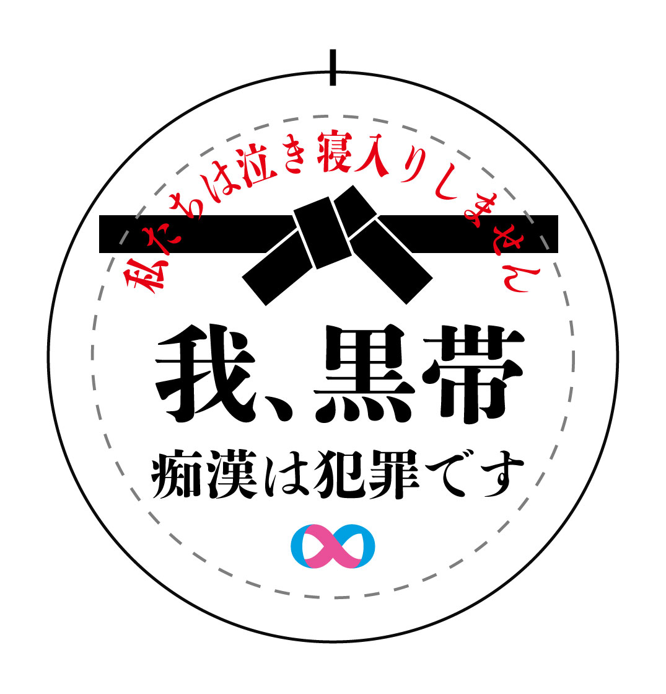

「称号」
第11回痴漢抑止バッジデザインコンテスト 缶バッチデザイン

Overview
- 課題制作 制作全般
- 制作時期：2025年
- 使用ツール：Illustrator
Concept
本作は、痴漢被害への不安を抱えながら日常を過ごす中高生が、身につけることで安心感を得られることを目的とした痴漢抑止バッジのデザインです。 「我、黒帯」という言葉には、単なる強さの象徴ではなく、すべての人が自分の尊厳を守る権利を持っているという意味を込めています。 黒帯は努力や積み重ねの証であり、本作では「私は簡単に踏み越えられる存在ではない」という意思表示として用いています。 痴漢行為は、抵抗されないと判断されたときに起こりやすいという点に着目し、触れれば反応が返ってくる存在であることを視覚的に示しました。 本作を通して、恐怖に耐えるのではなく、自分を守る意思を持つきっかけが生まれることを願っています。